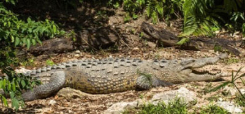

Protección y cuidado del cocodrilo en la cuidad de chetumal

Métodos para cuidar a un cocodrilo
Existen muchas maneras en la que podemos cuidar y proteger el habitad de este animal, primero nosotros debemos adoptar una postura en la que nuestra meta será reclutar y hacer que la gente se una a una buena causa, como métodos de cuidado tenemos.
- Hacer limpieza a los lugares que habiten a este animal de cualquier basura de plastico o de otros materiales que sean da�inos para está.
- Poner botes de basura en puntos estratêgicos, con el fin de disminuir la cantidad de basura diaria que se tira en su habitad.
- Informar a la población la importancia y el por qué debemos proteger a este animal, así tenemos pensado que la gente tendrá mas cuidado al momento de realizar una actividad al pie de ellos.
- Marcar al cocodrilo como una especie protegida, así cualquiera que se atreva a dañar a este animal obtendrá consecuencias, esto debe disminuir la caza furtiva de los animales que no se encuentran en resguardo.
|
.jpg)